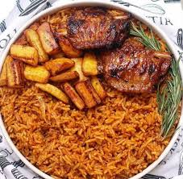

Jollof Rice
Nigerian Jollof Rice or Jellof rice is a rich and incredibly tasty west African one-pot Meal. It is a very versatile dish, and it is usually made from scratch using Rice, Tomatoes, Pimento peppers, Tomato paste, Scotch bonnet, Onions, Salt, and other spices.
| Ingredients | Amount |
|---|---|
| Basmati Rice | 400g |
| Red peppers, halved and deseeded | 3 |
| Garlic, chopped | 2 cloves |
| White Onion | 1, halved |
| Grated ginger | 1 tablespoon |
| Vegetable oil | 5 teaspoons |
| Tomato Puree | 100g |
| Bay leaves | 2 leaves |
| Dried thyme and curry powder | 1 tablespoon each |
| Chicken stock | 600ml |
Recipe
Serves six.
- Heat the oven to 200C/180C fan/gas 6.
- Tip the rice in a sieve, rinse under cold water, drain and set aside.
- Put the peppers, onion, garlic, ginger and chilli, if using, in a food processor and blitz until chopped.
- Heat the oil in an ovenproof casserole over a medium heat and fry the tomato purée for 2-3 mins, stirring often.
- Add the blitzed pepper mixture and fry for 5 mins more, then add the herbs, spices and 1 tsp salt.
- Fry for a further 1-2 mins, then stir in the rice to coat.
- Pour in the stock, stir, cover and bake for 45 mins until the rice is tender.
Let's see how your jollof rice turned out!
